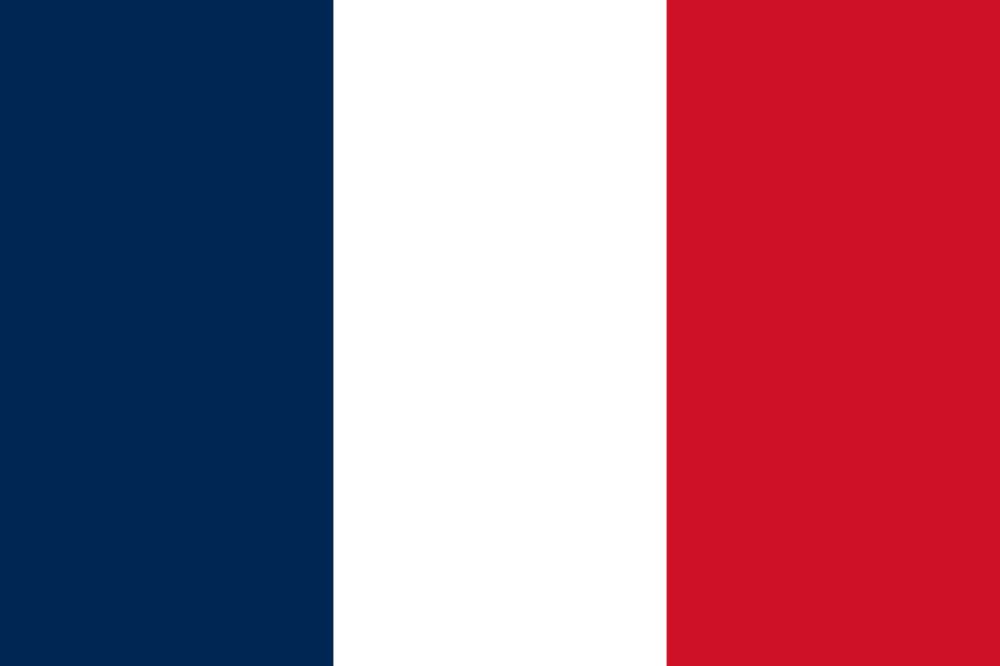

Fútbol Club Barcelona, pe scurt Barcelona sau Barça, este un club de fotbal din Barcelona, Spania, care evoluează în Primera División.

Fondat în 1899 de un grup de fotbaliști elvețieni, britanici și catalani conduși de Joan Gamper, clubul a devenit un simbol al culturii catalane și al naționalismului catalan, mottoul său fiind prin urmare „Barça este mai mult decât un club” (catalană: FC Barcelona - Més que un club). Imnul oficial al Barcelonei este „Cant del Barça”, scris de Jaume Picas și Josep Maria Espinàs.Spre deosebire de multe alte cluburi, suporterii dețin și conduc Barcelona. Este al doilea cel mai bogat club de fotbal în ceea ce privește veniturile, având o cifră de afaceri anuală de 450 milioane €. F.C. Barcelona are o îndelungată rivalitate cu Real Madrid, meciurile disputate între cele două echipe fiind cunoscute sub numele de „El Clásico”.
| Portari | Fundasi | Mijlocasi | Atacanti | Capitani ai echipei |
|---|---|---|---|---|
Marc-André ter Stegen  |
João Cancelo  |
Sergi Roberto | Robert Lewandowski | 1.Sergi Roberto |
Ronald Araújo  |
Gavi | João Félix |
2.Marc-André ter Stegen |
|
| Iñaki Peña | Jules Koundé  | Pedri | Raphinha  |
3.Ronald Araújo |
| Alejandro Balde | Frenkie de Jong  |
Ferran Torres | 4.Frenkie de Jong |